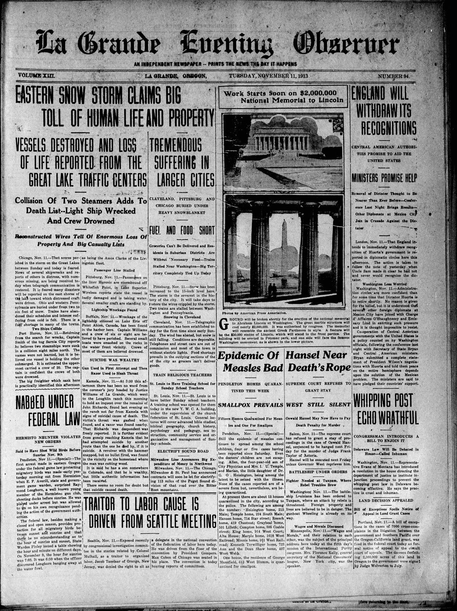

HN-386: Great Lakes storm destroys freighters and strands crews
HN-386 · November 17, 1913 · Transportation & Maritime > Shipwrecks, Maritime Accidents & Losses > Sinkings, capsizings and foundering

page scanRecorded finding
Discovery narrative
Source: Hammond Times, p. 4 — original page; earlier account of rescued L. C. Waldo crew; National Weather Service historical study.
Report: After days of extraordinary winds and snow, the paper counted more than 200 dead and numerous Great Lakes freighters lost. It identified the Henry B. Smith as missing with 28 aboard and described debris and crew remains washing ashore. Earlier coverage showed how other vessels such as L. C. Waldo were wrecked yet yielded survivors.
Assessment: NOAA's National Weather Service characterizes the November 7–10 'White Hurricane' as causing roughly 250 deaths and multiple major wrecks, with individual NOAA summaries using somewhat different totals. Every reported vessel wreck was not necessarily a total crew loss; the paired source about rescued sailors underscores that distinction.
Original archive images (7)
Authentic images retrieved from Historic Oregon Newspapers (University of Oregon), Hoosier State Chronicles (Indiana State Library), Papers Past (National Library of New Zealand) and South Carolina Historic Newspapers (University of South Carolina). Article crops are located using the archive's own OCR word coordinates and rendered at native crop resolution; article clips are assembled from the archive's own article-block images; page images marked "archive tiles" are stitched from the archive's own tiled page service at its 256-px tile cap; page images marked "issue PDF" are single pages rasterised from the archive's own issue PDF, with the page chosen by matching the headline against the PDF's text layer; page scans are reduced-size access renditions. No images were generated, mocked, or retouched.

Historic Oregon Newspapers (University of Oregon)
Open larger view · Archive viewer (full resolution)

Hoosier State Chronicles (Indiana State Library)
Open larger view · Archive viewer (full resolution)

Papers Past (National Library of New Zealand)
Open full-resolution clip · Archive viewer (full resolution)

Historic Oregon Newspapers (University of Oregon)
Open larger view · Archive viewer (full resolution)

Historic Oregon Newspapers (University of Oregon)
Open larger view · Archive viewer (full resolution)

Hoosier State Chronicles (Indiana State Library)
Open larger view · Archive viewer (full resolution)

South Carolina Historic Newspapers (University of South Carolina)
Open full-resolution crop · Page scan · Archive viewer (full resolution)
Source acquisition
Status: Archive images acquired
Authentic archive-owned image renditions were retrieved for this record and are displayed above. The source-acquisition manifest preserves the original pre-acquisition feasibility assessment.
Original seed
URL (preserved verbatim): https://newspapers.library.in.gov/?a=d&d=LCT19131117.1.4
Saved research report: Historical_Newspaper_Event_Research_378-402_2026-10-23.md
Evidence note: A newspaper report means a historical publication made a claim; it does not establish that claim as fact. Contemporary reporting is separated from later scholarly context and our own assessment.